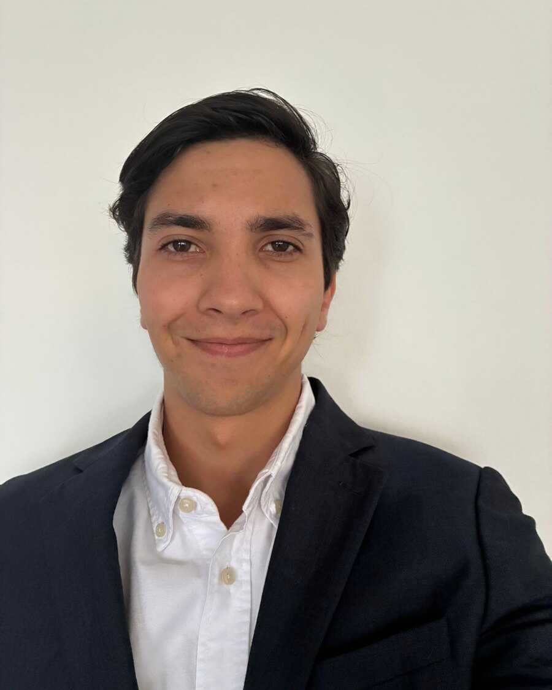

MartínSalazar
Graphic designer and storyteller in Bogotá. I design prints, social content and visual stories for brands. Open to remote roles and freelance projects.
Selected work
Client work first, then academic and personal projects.

About
I work between graphic design, content and audiovisual production. I like projects with a clear identity, whether that's a brand's feed, a print collection, a podcast or a short film.
Experience
- Communications intern, Latin America and Caribbean office2026
The Rockefeller Foundation - Graphic and content designer2025–now
Marini Star - Director, Kotoja summer camp2025
Asociación Santa Cruz - Graphic designer2024–25
Asociación Santa Cruz
Education
- Double degree in Digital Narratives and Design
- Universidad de los Andes, Bogotá
Tools
- Illustrator, Photoshop, InDesign
- Premiere, Lightroom
- Procreate, Canva
- Shopify, HTML and CSS
Languages
- Spanish, English
- Basic Italian
Beyond design
- Years leading youth groups, including directing a summer camp. It taught me to run teams and say things clearly.